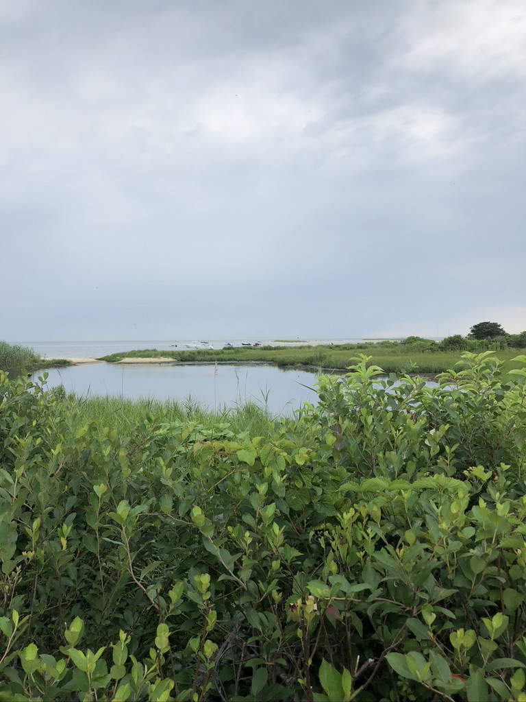
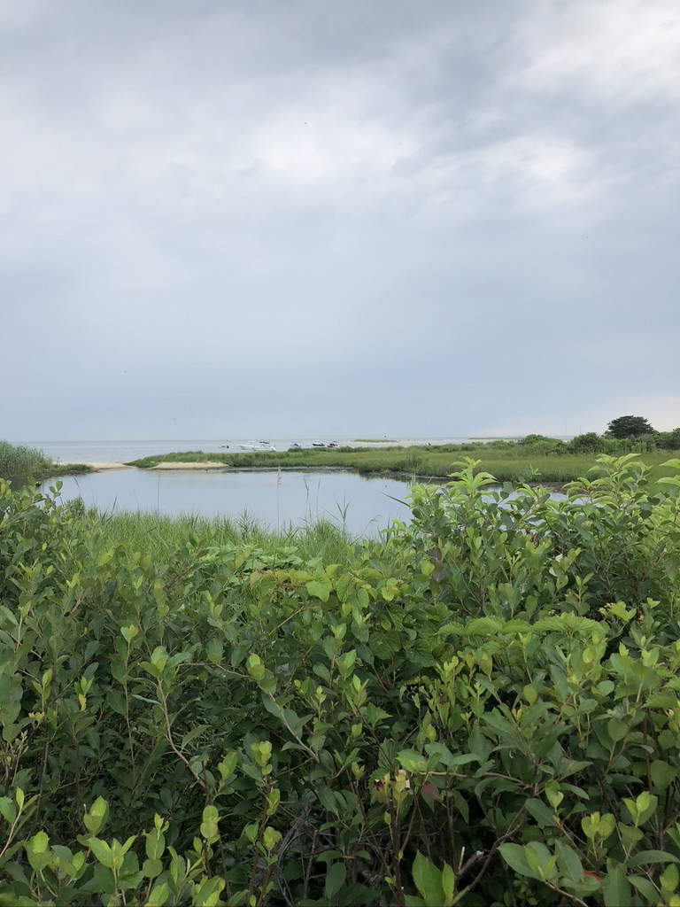

Travel
Lisbon, Portugal

Geographical Location: Iberian Peninsula, Europe
Photo Gallery


Martha's Vineyard, Massachusetts
 

Geographical Location: New England, USA
Martha's Vineyard is an island off of the cape in Massachusetts.
Photo Gallery
Menemsha Beach is a popular place to have dinner picnics. There are seafood markets close by where people get their dinner, and then head to the beach.

Fishing boats and sailboats in the water off of Menemsha Beach.
There are blue, purple, white, and pink hydrangeas all over the island.
Ward, Colorado

Geographical Location: Western United States
Photo Gallery

Brussels, Belgium
Geographical Location: Central Europe
Photo Gallery

The Atomium is a large, modernist sculpture in Brussels, Belgium that was originally created for the 1958 Brussels World's Fair.
New York City, NY

Geographical Location: Mid-Atlantic, United States
Photo Gallery

I took this photo on my first trip to New York City for my 16th birthday. My family and I went to all the tourist sites, and my favorite were the museums.
Since my birthday is the day before Christmas, I also got to experience New York City at Christmastime. Here is Central Park on a very sunny Christmas Day.